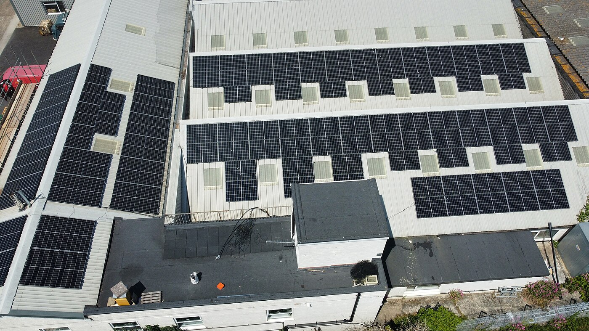

Use case: Cabin
How to size a solar system for a cabin
If you’re powering a cabin, your goal is simple: cover your real daily energy use and still have enough reserve for cloudy days or short winter sun. This guide gives you a practical sizing process so you can plan confidently before you buy hardware.
What you’re sizing (and why cabins are different)
Most cabin solar systems are off-grid or “mostly off-grid,” which means you’re sizing for both energy (watt-hours per day) and power (peak watts at one moment). Cabins also have two common curveballs:
- Seasonality: winter sun can be dramatically lower than summer in many locations.
- Occasional heavy loads: tools, pumps, or a microwave can spike peak power even if daily energy is modest.
{kind=link}
Step 1: Estimate your cabin’s daily energy use (Wh/day)
You don’t need perfect numbers to start. You need a realistic list of what you’ll run on a normal day, and roughly how long you’ll run it.
Watt-hours (Wh) = Watts × Hours per day
A quick cabin load list (common categories)
- Lighting (LEDs)
- Water pump
- Phone/laptop charging
- Refrigeration (often the biggest daily energy draw)
- Fans or small heater loads (season-dependent)
- Occasional tools (higher peak watts; not always high daily Wh)
If you want a fast baseline, start with “critical loads only” and expand later. You’ll make better choices when you size for what you truly need, not everything you might want.
Step 2: Choose autonomy and size battery capacity
Autonomy is how long you can run without meaningful solar input. Many cabin setups aim for 1–2 days of autonomy, then adjust based on weather patterns and how often the cabin is occupied.
Battery Wh ≈ Daily Wh × Days of autonomy ÷ DoD
DoD (depth of discharge) is how much of the battery you plan to use regularly. Using a more conservative DoD can improve longevity.
Battery chemistry choices for cabins
Lithium batteries provide more usable energy per pound and tend to last longer, but cost more upfront. Lead-acid can be adequate for occasional use if you size conservatively.
Choose chemistry based on how often you use the cabin and how much maintenance you are comfortable with.
Step 3: Size solar panels to refill the battery each day
Panel sizing is about replacing what you use daily (plus losses). The most common sizing error for cabins is using “best case summer sun” when you actually need a system that works in shoulder seasons or winter.
Panel watts ≈ Daily Wh ÷ Peak sun hours ÷ Efficiency
Use an efficiency factor like 0.75–0.85 for real-world losses.

{kind=link}
Seasonal adjustments and winter planning
Peak sun hours drop in winter, and snow or shade can reduce output further. If you use the cabin year-round, size panels for the lowest expected sun month or plan for backup charging.
If your cabin is primarily seasonal, you can size for summer use and accept lower winter performance.
Step 4: Size the inverter (continuous + surge)
Your inverter needs to handle your maximum simultaneous AC watts, plus starting surges for some devices (motors, compressors). Oversizing can increase idle losses, so aim for a realistic peak.
Step 5: Pick a system voltage that fits your power level
Voltage choice affects current, cable thickness, and how easy it is to scale. If your cabin system will run higher power loads or longer cable runs, higher voltage can simplify the build.
Step 6: Plan for backup charging (optional but common)
Cabins often use a generator or occasional grid hookup to cover extended cloudy periods or winter use. Backup charging can reduce the size and cost of the solar array and battery bank.
If you plan to use a generator, confirm your charger and transfer equipment are compatible with your system voltage.
Step 7: Example sizing walk-through
Example: A cabin uses 2,000 Wh per day and wants 2 days of autonomy. With 80% depth of discharge, the battery target is about 5,000 Wh (2,000 × 2 ÷ 0.8).
If the site has 4 peak sun hours and you assume 0.8 efficiency, panel watts are roughly 2,000 ÷ 4 ÷ 0.8 ≈ 625W. Round up to allow for seasonal variation.
This is only a starting point; refine it based on real usage and seasonal conditions.
System layout considerations
Cabin layouts often include long runs between panels, batteries, and the main load center. Longer runs increase voltage drop and wiring cost, which can influence your voltage choice.
Keep the battery bank close to the inverter and plan cable routes early to avoid costly rewiring.
Safety note
High-current DC wiring requires proper fusing, disconnects, and cable sizing. If you are unsure about wiring or code requirements, consult a licensed electrician.
Document your assumptions
Write down your load estimates, autonomy target, and sun hours. Clear assumptions make it easier to adjust later.
Final check
Review your sizing with a second set of eyes before purchasing major components.
Small systems note
For very small cabins, start with a minimal system and expand only if needed.
Common cabin sizing mistakes (and how to avoid them)
- Using summer-only assumptions: if you use the cabin in winter, plan for lower sun.
- Sizing the inverter “just in case”: peak watts drives wiring and battery stress.
- Skipping autonomy planning: batteries are expensive; decide the reserve you actually need.
- Forgetting losses: controller and inverter losses reduce usable energy.
FAQ
How many solar panels do I need for a cabin?
Estimate daily Wh, then divide by peak sun hours and an efficiency factor to get required panel watts.
What’s the best battery size for a cabin?
Battery size depends on daily Wh and autonomy. Start with 1–2 days, then adjust for your weather and use pattern.
Is 24V better than 12V for a cabin?
Often, yes for higher-power setups because current is lower. For small systems, 12V can be simpler.
What if I only use the cabin on weekends?
You can size for weekend loads and let solar recharge during the week. That can reduce battery and panel requirements.
Should I plan for winter use?
If the cabin is used in winter, size for lower sun hours or plan for backup charging.